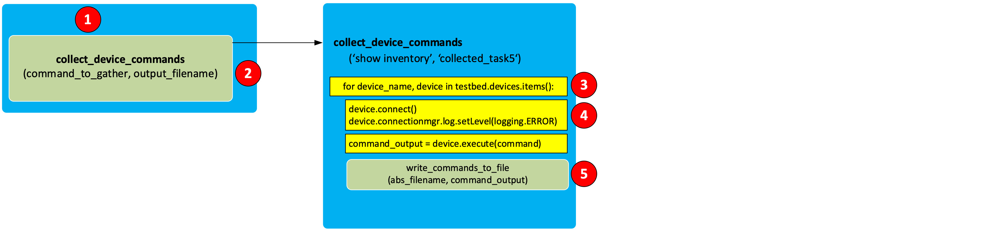

Step 1: Collect Show Commands¶
Value Proposition: Streamline network operations by automating comprehensive inventory data collection across your infrastructure. Leverage Python/pyATS to capture device outputs, enabling proactive asset management, risk mitigation, and compliance reporting. Upskill in automation for scalable solutions to drive operational excellence, reduce overhead costs, and accelerate digital transformation initiatives.
Let’s connect to pyATS and check parts of the code before running the final script.
pyats shell --testbed-file pyats_testbed.yaml
If everything works correctly, you will see an output similar to the following:
Welcome to pyATS Interactive Shell ================================== Python 3.10.12 (main, Nov 20 2023, 15:14:05) [GCC 11.4.0] >>> from pyats.topology.loader import load >>> testbed = load('pyats_testbed.yaml') ------------------------------------------------------------------------------- In [1]:
Now, let’s check the structure of the testbed.devices object.
print(testbed.devices)
Check the output
TopologyDict({'asav-1': <Device asav-1 at 0x7f60bef1da90>, 'csr1000v-1': <Device csr1000v-1 at 0x7f60beee73d0>, 'nx-osv-1': <Device nx-osv-1 at 0x7f60bda8d850>})
Note
As you can see from the output in the previous step, ‘Device <device_name>’ objects are contained as dictionary values in the object of TopologyDict class. Therefore, the device names are used as dictionary keys.
In this task we will apply standard dictionary method: items() to get the keys (device names) and values (respective device objects). We will iterate over the objects using a Python for-loop.
Note
As seen in the following code, Python uses indentation (the spaces at the beginning of a code line) to specify code blocks. The indentation is crucial because it determines the scope of the code.
from unicon.core.errors import EOF, SubCommandFailure # device_name - stores hostname of a device # device - stores device object for device_name, device in testbed.devices.items(): device.connect(log_stdout=False) # device.execute() method - will be used to get the output of "show inventory" command try: device.execute('show inventory') print('##########################\n') except SubCommandFailure as e: if isinstance(e.__cause__, EOF): print('Connection closed, try to reconnect') device.disconnect() device.connect()
Paste the following snippet to the pyATS console:
Place the following iPython command at the beginning of the code:
%cpaste
Copy and paste the code into the pyATS console:
from unicon.core.errors import EOF, SubCommandFailure for device_name, device in testbed.devices.items(): print('#########################') print(f'#####device_name = {device_name}, device = {device}') print(f'#####device_name = {device_name}, device_object_type = {type(device)}') device.connect(log_stdout=False) print('#####Output:') try: out = device.execute('show inventory') print(f'{out}') except SubCommandFailure as e: if isinstance(e.__cause__, EOF): print('Connection closed, try to reconnect') device.disconnect() device.connect()
End the code with
--On pyATS shell it would look something like this:
In [1]: %cpaste Pasting code; enter '--' alone on the line to stop or use Ctrl-D. :from unicon.core.errors import EOF, SubCommandFailure for device_name, device in testbed.devices.items(): print('#########################') print(f'#####device_name = {device_name}, device = {device}') print(f'#####device_name = {device_:name}, device_object_type = {type(device)}') device.connect(log_stdout=False) print('#####Output:') try: out = device.execute('show inventory') print(f'{out}') except SubCommandFailure as e: if isinstance(e.__cause__, EOF): print('Connection closed:, try to reconnect') device.disconnect:() device.connect() :--
As a result, each device should return the output of the show inventory command.
Note
If a device connection is closed or terminated unexpectedly after it has already connected to a device, there will be multiple errors generated (for example, the Python EOF exception would be invoked) at the time of executing the command. To address this situation, we will add the following code to reconnect to a device:
from unicon.core.errors import EOF, SubCommandFailure try: device.execute('show inventory') except SubCommandFailure as e: if isinstance(e.__cause__, EOF): print('Connection closed, try reconnect') device.disconnect() device.connect()
Exit the pyATS shell by using the exit command. Now we are ready to go through the final version of the script by gathering the commands specified from all the devices in the testbed and saving them to file on Linux (proceed to the next step).
Open the prepared script task2step1.py in Nano editor.
nano task2step1.py
Before diving into the details of the code, study the explanation of the code given below. The script task2step1.py has the following Python functions:
Function
Description
main()
The main function (see “1” on the illustration that follows). It calls the collect_device_commands function (see “2”).
collect_device_commands( command_to_gather, output_filename)
pyATS job file to run tests for the task
write_commands_to_file(abs_filename, command_output)
This is a supplementary function and it’s used to write the output of commands to a file (see “5”).
Note
To simplify the script, the name of the testbed is hard-coded into the main() function: testbed_filename = ‘pyats_testbed.yaml’ In subsequent scripts, the name of the testbed file will be provided as a parameter to the script.
Note
The log_stdout=False option in device.connect call will disable all logging into a screen to this device for the whole connection session (until disconnection takes place or until log_stdout is set to True). When multiple commands are being executed, it is preferred to avoid logging the output into the screen by using this method.
Exit Nano without saving by pressing Ctrl + X
Now run the script:
python task2step1.py
Check that there is a new file created: collected_task4. Then, check the time in which the file was created.
ls -l ~/LTRATO-2001 | grep task2step1.txtSample output in Bash shell:
-rw-r--r-- 1 cisco cisco 6.9K Nov 5 17:12 task2step1.txt
Check the content of the task2step1.txt file.
cat ~/LTRATO-2001/task2step1.txt
The output should look similar to the following:
Name: "Chassis", DESCR: "ASAv Adaptive Security Virtual Appliance" PID: ASAv , VID: V01 , SN: 9AT6971HDTE #### NAME: "Chassis", DESCR: "Cisco CSR1000V Chassis" PID: CSR1000V , VID: V00 , SN: 9TZZH2O1ZRC NAME: "module R0", DESCR: "Cisco CSR1000V Route Processor" PID: CSR1000V , VID: V00 , SN: JAB1303001C NAME: "module F0", DESCR: "Cisco CSR1000V Embedded Services Processor" PID: CSR1000V , VID: , SN: #### NAME: "Chassis", DESCR: "Nexus9000 9000v Chassis" PID: N9K-9000v , VID: V02 , SN: 9175PXH6Z4G NAME: "Slot 1", DESCR: "Nexus 9000v Ethernet Module" PID: N9K-9000v , VID: V02 , SN: 9175PXH6Z4G NAME: "Fan 1", DESCR: "Nexus9000 9000v Chassis Fan Module" PID: N9K-9000v-FAN , VID: V01 , SN: N/A NAME: "Fan 2", DESCR: "Nexus9000 9000v Chassis Fan Module" PID: N9K-9000v-FAN , VID: V01 , SN: N/A NAME: "Fan 3", DESCR: "Nexus9000 9000v Chassis Fan Module" PID: N9K-9000v-FAN , VID: V01 , SN: N/A ####
{kind=link}
Section author: Luis Rueda <lurueda@cisco.com>, Jairo Leon <jaileon@cisco.com>